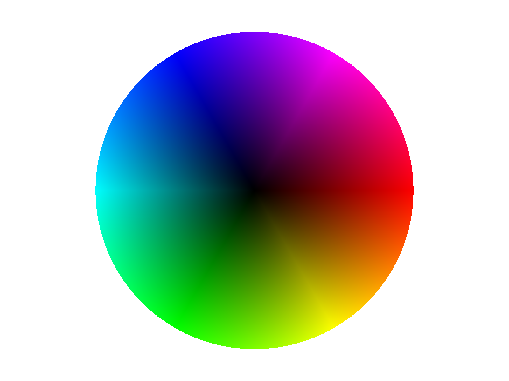

CS184/284A Spring 2025 Homework 1 Write-Up
Link to webpage:https://cal-cs184-student.github.io/hw-webpages-max-and-william-1/
Link to GitHub repository: https://github.com/cal-cs184-student/hw-webpages-max-and-william-1
Overview
Give a high-level overview of what you implemented in this homework. Think about what you've built as a whole. Share your thoughts on what interesting things you've learned from completing the homework. It was really interesting to see how rasterization works and how we use it to render images, and that so much goes into making a simple image appear on the screen.This homework, we implemented a rasterizer that started from rendering simple colored triangles, to eventually rendering textures on them as well. We also explored ways of antialiasing these images, from supersampling to using mipmap levels to make the images look better.
Task 1: Drawing Single-Color Triangles
Walk through how you rasterize triangles in your own words.We loop through each pixel based on width and height and check the midpoints(x+0.5, y+0.5) to check if its inside of a triangle by making sure that all of the cross products are greater than 0 or all less than 0.
Explain how your algorithm is no worse than one that checks each sample within the bounding box of the triangle. The bounding box of the triangle is defined as the smallest rectangle that can be drawn whilst ensuring that the entire triangle is within it.Our algorithm checks every sample within the bounding box, so it cannot be worse than that algorithm. We iterate between the minimum and maximum values of the coordinates in each direction, floor-ing the starting value and ceil-ing the final value to ensure that all of the value on the edge are correctly sampled and populated into the sample buffer.
Show a png screenshot of basic/test4.svg with the default viewing parameters and with the pixel inspector centered on an interesting part of the scene.Task 2: Antialiasing by Supersampling
Walk through your supersampling algorithm and data structures. Why is supersampling useful? What modifications did you make to the rasterization pipeline in the process? Explain how you used supersampling to antialias your triangles.We began by initializing the sample buffer by sample-rate times. This allowed us to record the color at each point that we sampled. Then, the sampling was more or less the same as Task 1, but we added 2 nested for loops so we would be able to sample correctly, starting at \( \frac{1}{2\sqrt{\text{sample rate}}} \) and incrementing by \( \frac{1}{\sqrt{\text{sample rate}}} \) until the counter variable was greater than 1, in both the x and y directions. After filling the sample buffer, we had to down sample the sample buffer so that we would be able to fill the frame buffer. We did this by averaging the sample buffer in sample-rate chunks. Once we calculated this value, we added it to the sample buffer.
Show png screenshots of basic/test4.svg with the default viewing parameters and sample rates 1, 4, and 16 to compare them side-by-side. Position the pixel inspector over an area that showcases the effect dramatically; for example, a very skinny triangle corner. Explain why these results are observed.

|
|
|
Supersampling was able to reduce aliasing in our triangles, especially in the tall skinny purple triangle, as supersampling essentially generates a higher-resolution image. This is particularly noticeable at the top where the floating pixels disappear.
Task 3: Transforms
Create an updated version of svg/transforms/robot.svg with cubeman doing something more interesting, like waving or running. Feel free to change his colors or proportions to suit your creativity. Save your svg file as my_robot.svg in your docs/ directory and show a png screenshot of your rendered drawing in your write-up. Explain what you were trying to do with cubeman in words.Rotated cubeman’s arms such that he looked like he was dabbing. We accomplished this by rotating both of his arms. The right arm a rotation and minimal translation, as the rotation point was not quite clear to use when we began. For the left arm, we have to rotate it both at the elbow and the shoulder to make the look, along with some translations to offset the rotation point.
Task 4: Barycentric coordinates
Explain barycentric coordinates in your own words and use an image to aid you in your explanation. One idea is to use a svg file that plots a single triangle with one red, one green, and one blue vertex, which should produce a smoothly blended color triangle.
Barycentric coordinates is a coordinate system used in triangles that can be used to easily determine the closeness of a point to the three vertices. In this example, the colors at each point are interpolated using barycentric coordinates. This can be thought of as putting a red blue and green light in each of the vertices and expressing the combination of colors of light at each point. Intuitively, the closer a point are to a given vertex, the more influence that close vertex will have on that point. On the image, this would be the bottom left vertex being red, bottom right vertex being blue and the top vertex being green. Another example would be the bottom middle of the triangle, having equal impact from the red and blue sides, mixing towards a purple color. This coordinate system works particularly well in graphics where light and color sources need to be interpolated across different polygons.
Show a png screenshot of svg/basic/test7.svg with default viewing parameters and sample rate 1. If you make any additional images with color gradients, include them. Task 5: "Pixel sampling" for texture mapping
Explain pixel sampling in your own words and describe how you implemented it to perform texture mapping. Briefly discuss the two different pixel sampling methods, nearest and bilinear.Pixel sampling is when we convert the screen coordinates to the texture coordinates, and we use those texture coordinates to select a texel from the texture and color the screen pixel accordingly. The two methods are nearest and bilinear. The nearest method is simply choosing the nearest texel center to the texture coordinates we find when we convert from screen coordinates. Bilinear sampling is taking the four closest texels (in a square in the texture), and interpolating them together, essentially taking a weighted average of the four texels, which we then use to color the screen pixel accordingly.
Check out the svg files in the svg/texmap/ directory. Use the pixel inspector to find a good example of where bilinear sampling clearly defeats nearest sampling. Show and compare four png screenshots using nearest sampling at 1 sample per pixel, nearest sampling at 16 samples per pixel, bilinear sampling at 1 sample per pixel, and bilinear sampling at 16 samples per pixel.|
|
|
|
|
|
The nearest sampling method appears to be more “pixelated” and “blocky” than the bilinear sampling at both levels of sampling rate. There would be a large difference between the two methods when there is very fine and high-frequency detail. The nearest sampling method may be very pixelated and have aliasing, while the bilinear sampling method would be smoother, but blur out some detail.
Task 6: "Level Sampling" with mipmaps for texture mapping
Explain level sampling in your own words and describe how you implemented it for texture mapping.Level sampling is selecting the appropriate level of detail by choosing a higher or lower mipmap, ensuring higher detail in regions where it is needed while reducing detail in less critical regions which allows for anti-aliasing. We implemented this in three different ways. The first way is simply choosing the mip-map level 0, or the highest resolution mipmap, for every pixel. The second and third way required calculating a mipmap level D by taking the logarithm of L which is found by taking the maximum of the squared sum of derivatives. The second way takes this mipmap level D and rounds it to the nearest integer, and samples the texel from that mipmap level for that pixel. The third and final way takes the mipmap level D, and interpolates it in between the higher and lower integers surrounding D, which essentially mixes the two mipmap levels for that pixel.
You can now adjust your sampling technique by selecting pixel sampling, level sampling, or the number of samples per pixel. Describe the tradeoffs between speed, memory usage, and antialiasing power between the three various techniques.Pixel sampling can be fast as it fetches values from a single mipmap level, and it takes up less memory as we only need one mipmap level. However, it has a limited anti-aliasing effect. Level sampling is somewhat slower than pixel sampling as it needs some extra calculations to calculate the optimal level sample, as well as taking more memory, as it needs to store extra mipmap levels (although not as much). It is however better at antialiasing than simple pixel sampling. Finally, increasing the number of samples per pixel, or supersampling, can be super effective at anti-aliasing, but it takes a lot of computation as it has to do many more computations per pixel. It also needs to store more memory at higher sampling rates, so it may also take up a lot of memory.
Using a png file you find yourself, show us four versions of the image, using the combinations of L_ZERO and P_NEAREST, L_ZERO and P_LINEAR, L_NEAREST and P_NEAREST, as well as L_NEAREST and P_LINEAR.

|
|
|
|
|